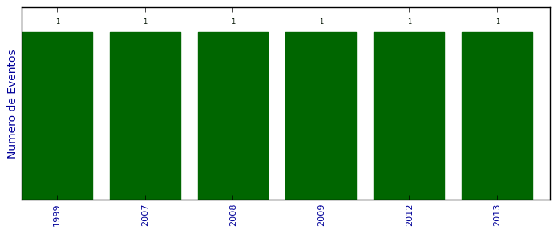

UFSM - Análise do Lattes
Total de organização de eventos

Número total de itens: 6
2013
| 1. | AUGUSTIN, I.. V Simpósio Brasileiro de Computação Ubíqua e Pervasiva. 2013. Congresso |
2012
| 1. | AUGUSTIN, I. ; COSTA, C.. IV Simposio Brasileiro de Computyação Ubiqua e Pervasiva. 2012. Congresso |
2009
| 1. | AUGUSTIN, I. ; GEYER, C. ; YAMIN, Adenauer Correa. I Simposio Brasileiro de Computação Ubíqua e Pervasiva (SBCUP). 2009. Congresso |
2008
| 1. | AUGUSTIN, I. ; YAMIN, Adenauer Correa ; GEYER, Cláudio F Resin. II WORKSHOP ON PERVASIVE AND UBIQUITOUS COMPUTING. 2008. Congresso |
2007
| 1. | AUGUSTIN, I. ; GEYER, Cláudio F R ; YAMIN, Adenauer Correa. I Workshop on Pervasive and Ubiquitous Computing (WPUC). 2007. Congresso |
1999
| 1. | AUGUSTIN, I. ; PINHEIRO, M. K.. III Ciclo de Palestras de Informática. 1999. Outro |
(*) Relatório criado com produções desde 1999 até HOJE
Data de processamento: 02/04/2014 18:12:47